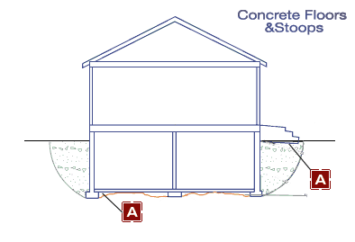

Symptoms and Solutions: Settlement of Concrete Floors or Stoops
Problem
Hover to view diagram.
Non-uniform settlement of concrete floors or stoops frequently indicates inadequate soil support for affected floor or foundation.
Causes

Hover to view diagram.
Solution: Re-Leveling
- Relevel and reinforce or replace defective framing.
- Relevel and reinforse defective beam or column. Sometimes adding one or more columns is more cost effective than renovating the existing ones.
- Underpin settling foundation with one of the appropriate foundation underpinning technologies (see solutions for diagonal cracking walls).